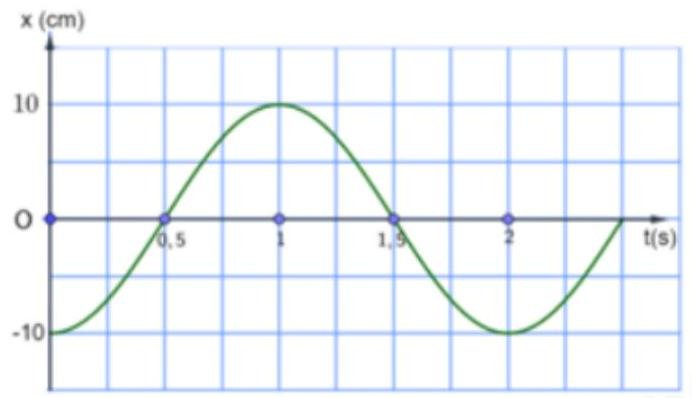
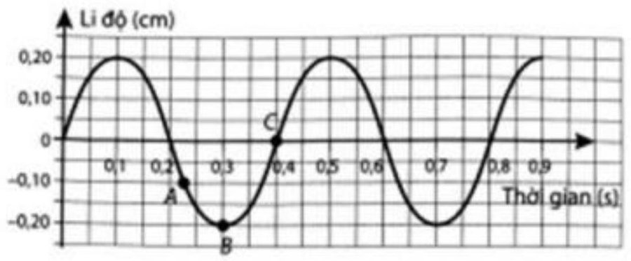
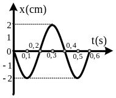
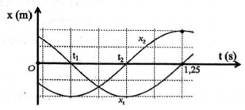
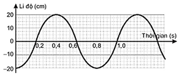
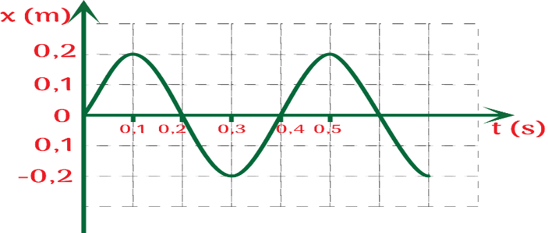
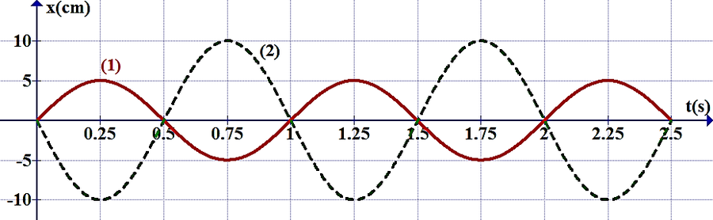
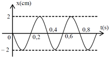

Bài 2 · Mô tả dao động (đồ thị, độ lệch pha) · 8 câu
PHẦN II. Câu trắc nghiệm đúng sai
Trong mỗi ý a), b), c), d) chọn Đúng hoặc Sai. Đúng 1 ý: 0,1 · 2 ý: 0,25 · 3 ý: 0,5 · 4 ý: 1,0 điểm.
1
Thông hiểu
Đồ thị li độ - thời gian của một vật dao động điều hòa được mô tả trên hình

a) Biên độ dao động của vật là 10 cm .
b) Pha ban đầu của vật là $-\pi$ (rad)
c) Chu kì dao động của vật là $1\left( \,s\right)$
d) Tốc độ của vật tại thời điểm $1,5\,s$ là $10\pi\left( \text{ cm}/s\right)$.
2
Thông hiểu
Cho đồ thị li độ theo thời gian của một vật dao động điều hoà như hình vẽ:

a) Biên độ dao động của vật bằng $0,20\text{ cm}$.
b) Chu kì dao động của vật bằng $0,4\text{ s}$
c) Pha ban đầu của dao động là $-\frac{\pi}{2}$ rad.
d) Tại thời điểm $t=0,2\text{ s}$ vật ở vị trí biên.
3
Thông hiểu
Vật dao động điều hòa có đồ thị li độ phụ thuộc thời gian như hình bên.

a) Chiều dài quỹ đạo dao động là 2 cm
b) Tại $t=0,3$ s thì $x=2$ cm
c) Phương trình dao động có dạng là $x=2\cos(\omega t+\pi)$ cm
d) Vật thực hiện được 1 dao động sau 0,2 s
4
Thông hiểu
Xét hai vật (1) và (2) dao động điều hòa cùng phương, li độ tương ứng là $x_1$ và $x_2$. Một phần đồ thị li độ – thời gian của hai vật được cho như hình vẽ. Xét tính đúng/sai trong các phát biểu sau:

a) Hai dao động cùng tần số.
b) Hai dao động có cùng biên độ.
c) Chu kì dao động của vật (1) là 1,25 s.
d) Độ lệch pha của hai dao động là $\frac{\pi}{2}$ rad.
5
Thông hiểu
Cho vật dao động điều hoà có đồ thị như hình vẽ.

a) Biên độ dao động là 20 cm.
b) Tần số của dao động là 2,5 Hz.
c) Phương trình dao động là $x=20\cos(2,5\pi t-\pi)$ cm.
d) Vận tốc của vật khi có li độ -10 cm là $\pm25\pi\sqrt{3}$ cm/s.
6
Thông hiểu
Hình dưới đây là dao động điều hòa của một vật.

a) Đồ thị (li độ - thời gian) trong dao động điều hoà có dạng hình sin.
b) Tần số góc của dao động là 0,4 rad/s.
c) Pha ban đầu của dao động là rad.
d) Phương trình vận tốc của vật là $v=100\pi\cos(5\pi t)$ cm/s.
7
Thông hiểu

Quan sát đồ thị li độ - thời gian của hai vật dao động điều hòa trên hình, dao động thứ nhất (1) được biểu diễn bởi đường nét liền và dao động thứ hai (2) được biểu diễn bởi đường nét đứt. Trong những nhận định dưới đây, chỉ ra nhận định đúng, nhận định sai.
a) Dao động (2) có biên độ gấp đôi biên độ dao động (1).
b) Đây là hai dao động ngược pha.
c) Vào thời điểm $t=0{,}75$ s, gia tốc của vật (2) có giá trị cực đại.
d) Vận tốc cực đại của vật (1) là 5 cm/s.
8
Thông hiểu

Cho đồ thị li độ theo thời gian của một vật dao động điều hoà như hình vẽ. Lấy $\pi^{2}=10$.
a) Biên độ dao động của vật bằng 2 cm
b) Tần số dao động của vật bằng 2,5 Hz
c) Pha ban đầu của dao động là $-\frac{\pi}{2}$ (rad)
d) Tại thời điểm t = 0,2 s gia tốc của vật bằng 0 cm/s$^2$